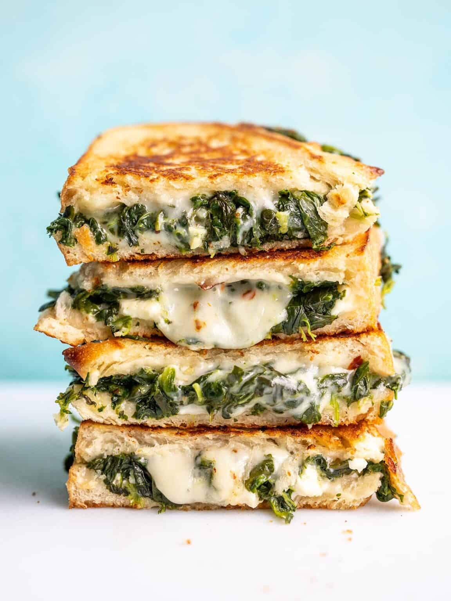

Spinach And Feta Grilled-Cheese

Description
Bougie Budget Grilled Cheese
Ingredients
- 1/2 Tbsp olive oil
- 1 clove garlic, minced
- 1/4 lb. frozen chopped spinach
- 1 pinch salt and pepper
- 4 slices bread
- 2 Tbsp butter
- 1 cup shredded mozzarella
- 1 oz. feta
- 1 pinch crushed red pepper
Steps
- Add the olive oil and minced garlic to a skillet. Sauté over medium heat for about one minute, then add the frozen spinach (no need to thaw), and a pinch of salt and pepper. Continue to sauté over medium until most of the moisture has evaporated from the skillet.
- Spread butter over one side of each of the slices of bread. Flip the bread over so the buttered side is facing down as you build the sandwiches.
- Divide half of the shredded mozzarella between two slices of bread. Top the mozzarella with the crumbled feta.
- Divide the cooked spinach between the two sandwiches, then top with the remaining shredded mozzarella and a pinch of crushed red pepper flakes. Top each sandwich with the second slice of bread, buttered side facing out.
- Heat a large skillet over medium-low. Once hot, add the sandwiches and cook on each side until golden brown and crispy on the outside and warm and gooey on the inside.
- Cut the sandwiches in half and serve!